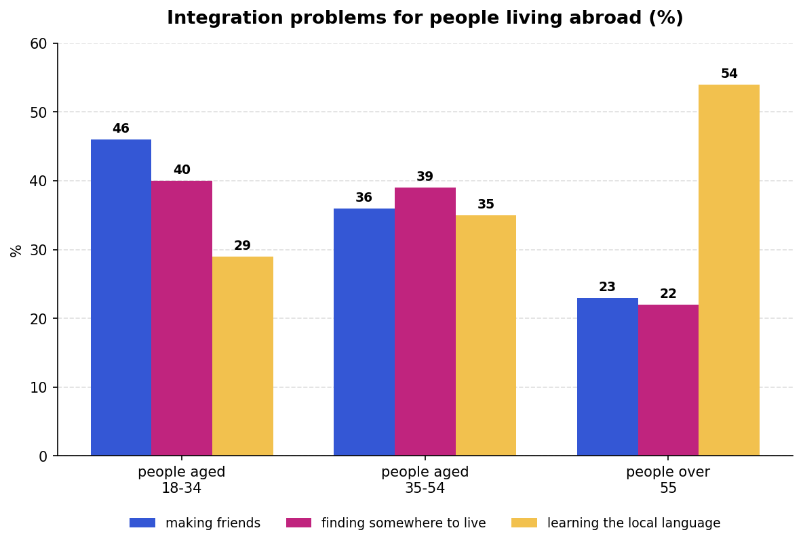
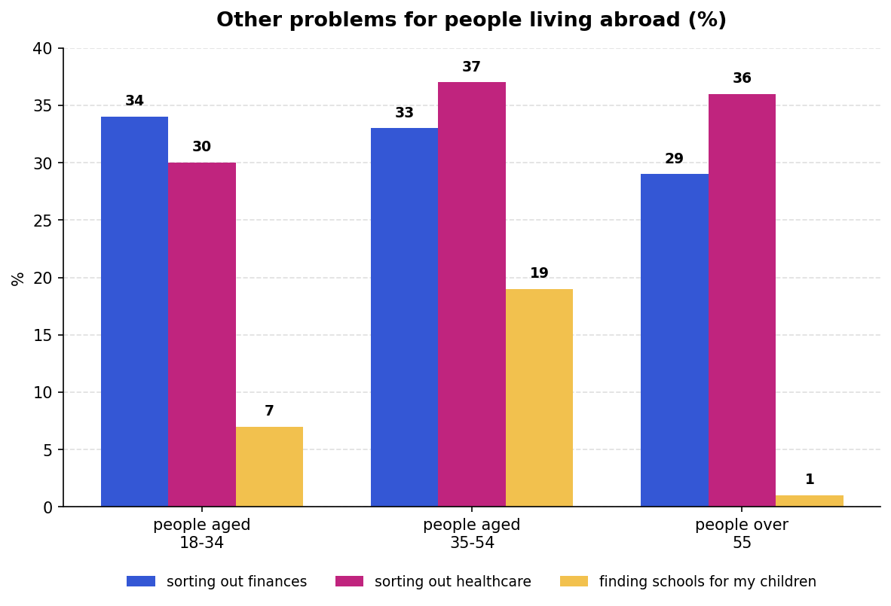

Wordlist — Writing Task 1 language
These words and phrases come from today's articles and sample charts.
| word / phrase | meaning | example | common collocations |
|---|---|---|---|
| proportion | a part or share of a whole, often expressed as a fraction or percentage | A significant proportion of students struggle with homesickness at first. | a significant/large/small proportion of |
| integrate | to become part of a new group, place, or society, adjusting to fit in | It can take newcomers over a year to fully integrate into a new culture. | integrate into (a culture/society) |
| steep learning curve | a situation in which a lot of new information must be learned quickly | Adjusting to a new education system involves a steep learning curve. | a steep learning curve; face a learning curve |
| overwhelming majority | almost all of a group; a very large majority | The overwhelming majority of respondents said they were satisfied. | the overwhelming majority of |
| substantially | to a great or significant extent | International tuition fees are substantially higher than domestic fees. | substantially higher/lower/greater |
| fluctuate | to rise and fall irregularly over time | Enrolment numbers tend to fluctuate slightly from year to year. | fluctuate between; fluctuate wildly |
| a factor of (two/three) | a multiple used to describe how much something has increased or decreased | Tuition costs rose by a factor of two over the past decade. | increase/rise by a factor of... |
| comparable | similar enough to allow a comparison to be made | The two age groups reported comparable levels of difficulty. | comparable to/with; broadly comparable |
| overall trend | the general direction or pattern shown by data, considered as a whole | The overall trend shows a steady rise in international enrolment. | the overall trend is; identify the overall trend |
| marginally | by a very small amount | The figure for 2020 was only marginally higher than the year before. | marginally higher/lower/more |
Complete the sentences with words from the table.
1. A large of students said they found the first term the hardest.
2. It usually takes time to fully into a new culture.
3. Learning a new academic system can involve a .
4. The of graduates said they would study abroad again.
5. Rent in the city centre is higher than in the suburbs.
6. Enrolment numbers tend to slightly year on year.
7. The cost of tuition increased by in under ten years.
8. The two age groups reported levels of difficulty.
9. The is a steady rise in the number of applicants.
10. The 2019 figure was only higher than in 2018.
Article — Studying Abroad: A Growing Global Trend
Read the article. The highlighted phrases are defined below it.
Every year, millions of students leave their home countries to pursue a degree overseas. According to recent estimates, the number of international students worldwide has more than doubled over the past two decades, rising from around two million in the early 2000s to well over five million today. This dramatic increase reflects a growing belief that an international qualification can open doors that a purely domestic education cannot.
For many students, the decision to study abroad comes down to opportunity. Universities in countries such as the United States, the United Kingdom, and Australia are often seen as offering internationally recognised qualifications, along with valuable networking opportunities. Data from international education surveys consistently show that graduates who studied overseas report higher starting salaries than those who studied only in their home country, although the gap varies considerably depending on the field of study.
However, the path abroad is rarely straightforward. A significant proportion of new arrivals report struggling with culture shock in their first few months, particularly when it comes to navigating an unfamiliar education system. In some surveys, as many as 40 percent of respondents said they had seriously considered returning home during their first semester. Interestingly, this figure tends to fall sharply after the first six months, as students settle into new routines and build support networks.
Language is another major factor. Even students who arrive with strong exam scores in their target language often find that everyday conversation, slang, and regional accents present a steep learning curve. Universities have responded to this by expanding their welfare and language support services considerably; many institutions now offer free conversation classes, buddy systems pairing new students with local mentors, and dedicated advisors trained specifically to help international students settle in.
The financial side of studying abroad also plays a significant role in students' decisions. Tuition fees for international students are, on average, substantially higher than those charged to domestic students, sometimes by a factor of two or three. As a result, many families begin financial planning years in advance, and scholarship competition has become increasingly fierce.
Despite these challenges, the overwhelming majority of international students say they would make the same decision again. Surveys consistently show high satisfaction rates, with graduates citing personal growth, independence, and cross-cultural friendships as benefits that outweighed the initial difficulties. As the world becomes ever more interconnected, it seems likely that the number of students choosing to study abroad will continue its steady climb in the years ahead.
Highlighted phrases
more than doubled — became more than twice as large.
a significant proportion — a notably large share or part of a group.
fall sharply — decrease suddenly and by a large amount.
steep learning curve — a situation requiring a lot of new information to be learned quickly.
substantially higher — considerably or significantly greater.
by a factor of two or three — two or three times as much.
the overwhelming majority — almost all of a group.
Comprehension — choose the correct answer.
1. According to the article, how has the number of international students changed over the past two decades?
2. What does the article say about starting salaries?
3. According to the article, what tends to happen to the number of students considering returning home?
4. What have universities done in response to language-related struggles?
5. According to the article, how do most international students feel about their decision, looking back?
Complete the sentences with a phrase from the article.
1. The number of applicants has since the new policy was introduced.
2. of employees said they were satisfied with the new schedule.
3. Demand for the product tends to once the initial excitement fades.
4. Learning a new programming language can involve a at first.
5. Rent in the city centre is than in the suburbs.
6. The company's profits increased compared to last year.
7. of survey respondents said they were happy with the service.
Writing Task 1 — introductory sentences
Look at this introductory sentence to a summary of a line graph, then answer the questions below.
The graph shows the changes in the number of people from abroad who visited Townsville, Queensland, over a four-year period.
1. Which word(s) say how the information is shown?
2. Which word(s) explain the purpose of the graph, using the writer's own words?
3. Which word(s) express the time period the information covers?
Write introductory sentences for a pie chart and a bar chart by putting these phrases in the correct order.
Pie chart: and the languages / in Winchester, California, / The chart shows / the number of households / which people speak there
Bar chart: according to age / how the problems vary / into a new country and / The chart shows / the difficulties people have / when they integrate
Pie chart: The chart shows the number of households in Winchester, California, and the languages which people speak there.
Bar chart: The chart shows the difficulties people have when they integrate into a new country and how the problems vary according to age.
Writing Task 1 — analysing a chart
Look at this Writing task, then answer questions 1–3 in full sentences.
The chart below shows information about the problems people have when they go to live in other countries. Summarise the information by selecting and reporting the main features, and make comparisons where relevant.

1. What is the greatest problem for 18–34-year-olds? How many of them experience this problem? How does this compare with the other age groups?
2. What is most problematic for people in the oldest age group? How does this compare with the youngest age group?
3. What does the oldest age group have the least difficulty with? How does this compare with the other age groups?
Writing Task 1 — reading a sample answer
Read the sample answer below to the Writing task from Task 4, then answer the questions underneath it.
The chart shows the difficulties people have when they move to a new country and how the problems vary according to people's ages.
The greatest problem for young people aged 18 to 34 is forming friendships, a problem experienced by 46 percent of the people in this age group. However, only 36 percent of 35- to 54-year-olds find it hard to make friends, while even fewer people over 55 (23 percent) have this problem.
Fifty-four percent of the older age group find learning to speak the local language the most problematic. In comparison, the youngest age group finds this easier, and the percentage who have problems learning the language is much lower, at 29 percent.
In contrast to their language-learning difficulties, only 22 percent of people in the oldest age group have trouble finding accommodation. However, this is the second most significant problem for the other two age groups, with 39 to 40 percent of the people in each group finding it hard.
In general, all age groups experience the same problems to some extent, but the percentage of older people who find language learning difficult is much higher than the others.
1. Which paragraph answers each question from Task 4?
Question 1 → paragraph
Question 2 → paragraph
Question 3 → paragraph
2. What is the purpose of the last paragraph?
Note for Alan: the last paragraph gives an overall summary of the general pattern across all age groups — a good model for a Task 1 conclusion.
Grammar — percent or percentage?
IELTS candidates often make mistakes when they use percent and percentage. Look at the two underlined sentences in the sample answer above.
1. Which word — percent or percentage — is used after a number?
2. Which word is not used with the exact number given?
3. Do we use "a" before percent?
4. Which word do we use before percentage?
5. Can we make percent plural?
Each of these sentences contains a mistake. Find and correct the mistakes.
1. The graph shows the increase in the percent percentage of people who used rail transport between 1976 and 1999. (example — already corrected)
2. The graph shows the percentage of people with a criminal record according to their age and percentage of people in prison according to their gender.
3. By 1995, the numbers had fallen to a two percent.
4. In 2004, the number rose to approximately 58 percents.
5. It is surprising that percentage of people watching television remained the same.
6. On the other hand, socialising with friends rose sharply to 25 percentage in comparison with 1981.
2. ...according to their age and the percentage of people in prison according to their gender.
3. By 1995, the numbers had fallen to two percent.
4. In 2004, the number rose to approximately 58 percent.
5. It is surprising that the percentage of people watching television remained the same.
6. ...rose sharply to 25 percent in comparison with 1981.
Key grammar — making comparisons
Match the rules for making comparisons with the examples from the sample summary in Task 5.
a. easier
b. higher
c. the greatest
d. the most problematic
1. Form comparatives of adjectives with one syllable by adding -er.
2. Form superlatives of adjectives with one syllable by adding the -est.
3. Form comparisons and superlatives of adjectives with two syllables ending in -y by changing y to i and adding -er/-est.
4. Form comparisons and superlatives of adjectives with more than one syllable by adding more and the most.
Complete these sentences by putting the adjective in brackets into the correct form.
1. Learning the language is the most important (important) thing for people going to live in a new country. (example)
2. Many people find making friends (hard) than finding a job.
3. Local people are often (friendly) than you expect.
4. If the climate is (warm) or (cold) than at home, it affects the way people feel about their new country.
5. (old) people are often (good) at making friends than younger people.
IELTS candidates often make mistakes with comparisons of adjectives and adverbs. Find and correct the mistakes.
1. I can read English easier more easily than before. (example — already corrected)
2. Living in the country is the better way to learn the language.
3. Travelling is becoming more and more clean and safe.
4. The most highest percentage appeared in 1991.
5. Workers' salaries got worser in the year 2001.
6. I want to study abroad so that I can get a more well job in the future.
3. Travelling is becoming cleaner and safer.
4. The highest percentage appeared in 1991.
5. Workers' salaries got worse in 2001.
6. I want to study abroad so that I can get a better job in the future.
Note for Alan: I've left item 2 without a fixed answer — "the better way" is actually correct English when comparing exactly two options, so I'm not confident there's a genuine error here. Worth checking against the book's key.
Now look at this chart and discuss the questions below.

1. What does the chart show?
2. What is the biggest problem for the middle age group? What percentage of them experience this problem? How does this compare with the other age groups?
3. Which age group seems to have the most problems related to money? How does this compare with the other age groups?
4. Which age group has the most problems finding a school for my children? Which has the least?
5. In general, which group has to deal with the most problems?
Note for Alan: the exact figures on this second chart are my own reconstruction based on the visual proportions in your photo, since the numbers weren't printed on the page — worth a check against the original if precision matters here.
Writing Task 1 report
The chart above shows other problems people have when they go to live in other countries. Summarise the information by selecting and reporting the main features, and make comparisons where relevant. Write at least 150 words.
First, write a brief plan.
How many paragraphs will you need? What information will you include in each paragraph?
Now write your full answer. Use the sample summary in Task 5 to help you.
Quick-fire introductions
For each Writing Task 1 prompt below, write just the introductory sentence — don't write the full report, just one good sentence that says what the chart shows.
Example: Bar chart / coffee sales / Kenya / 1990 to 2000
→ The bar chart shows how much coffee was sold in Kenya between 1990 and 2000.
1. Pie chart / reasons for leaving a job / United Kingdom / 2015
2. Line graph / average house prices / four major cities / 2000 to 2020
3. Table / percentage of households with internet access / five countries / 2010 and 2020
4. Bar chart / methods of transport used to travel to work / three cities / 2022
5. Pie charts / household water usage / two countries / 2023
1. The pie chart shows the reasons why people left their jobs in the United Kingdom in 2015.
2. The line graph shows changes in average house prices in four major cities between 2000 and 2020.
3. The table shows the percentage of households with internet access in five countries in 2010 and 2020.
4. The bar chart shows the methods of transport people used to travel to work in three cities in 2022.
5. The pie charts show how households used water in two countries in 2023.
Day 3 complete! 🎉
All 9 tasks done. Come back tomorrow for the next day.